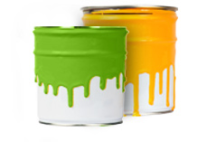

Réduction des déchets
La Semaine canadienne de réduction des déchets se déroulera du 20 au 26 octobre. La semaine de célébration annuelle donne aux gens, aux écoles, aux municipalités et aux entreprises la chance de mener par l’exemple en posant des gestes pour réduire, réutiliser et recycler.
En tant que membre du Conseil de la Semaine canadienne de réduction des déchets, Recycle NB est le commanditaire de la semaine au Nouveau-Brunswick. Ce moment dans l’année se veut une reconnaissance de la richesse, de la beauté et de la diversité de notre monde ainsi que de l’importance de travailler au développement écologique durable par la conservation des ressources et la réduction du gaspillage. Nous espérons que vous vous joindrez au mouvement pour la réduction des déchets. Visitez le site Web www.srdcanada.compour savoir comment vous pouvez agir.
Défi Recycle mon cell
Saviez-vous que les vieux téléphones cellulaires ont de la valeur et que le programme Recycle mon cell sert à empêcher qu’ils finissent leur vie dans un site d’enfouissement sanitaire?
Recycle mon cell, le programme national de recyclage des téléphones cellulaires du Canada, tient à appuyer la Semaine canadienne de réduction des déchets en s’assurant que tous les téléphones cellulaires, téléphones intelligents, assistants numériques sans fil et téléavertisseurs qui sont désuets ou hors d’usage, ainsi que leurs piles et accessoires, sont correctement recyclés.
Dans le cadre de la célébration de la Semaine canadienne de réduction des déchets 2014, le programme Recycle mon cell lance un défi à toutes les écoles du Canada. Si votre école ou votre établissement postsecondaire est à la recherche d’une occasion pour venir en aide à l’environnement, ce défi s’adresse à vous! Inscrivez-vous au défi ici : www.srdcanada.com.
Nous mettons au défi les élèves de la maternelle au niveau postsecondaire du Canada de recycler le plus grand nombre possible de vieux appareils sans fil et d’accessoires entre le 20 octobre et le 21 novembre 2014. L’année dernière, l’école Donald Fraser Memorial à Plaster Rock a remporté le défi au Nouveau-Brunswick.
Campagne Réduire mon fardeau
Selon les chiffres les plus récents, les Canadiennes et Canadiens produisent 1 031 kg de déchets par personne par année, dont plus de 75 % s’accumule dans les sites d’enfouissement sanitaire partout au pays. Voulez-vous faire quelque chose pour changer la situation? Participez à la campagne Réduire mon fardeau et partagez vos actions avec vos concitoyens.Le recyclage est un des moyens de contribuer à la protection de l’environnement. Réduire les déchets qu’on produit et réutiliser au lieu de jeter sont d’autres excellentes habitudes pour sauver l’environnement.
Recyclage des pneus usés
Le recyclage des pneus usés contribue à protéger l’environnement et permet de créer de nouveaux produits de caoutchouc et des emplois au Nouveau-Brunswick. Faites votre part pour assurer un environnement sain et sécuritaire et célébrez la Semaine de la réduction des déchetsen recyclant vos pneus usés.
Basse pression
Maintenir la pression recommandée pour les pneus de son véhicule est une stratégie gagnante! Une pression trop basse des pneus peut être dangereuse pour votre sécurité et celle de vos passagers, contribue au réchauffement climatique et augmente votre consommation d’essence. Gardez vos pneus en forme! Mesurer la pression dans vos pneustous les mois.
La Semaine canadienne de la réduction des déchets se déroule du 20 au 26 octobre 2014. Pourquoi ne pas commencer la mesure mensuelle de la pression de vos pneus cette semaine? Un petit geste à faire pour protéger l’environnement et assurer une conduite sécuritaire.
Vous ne connaissez pas la pression recommandée pour les pneus de votre véhicule? Vous ne savez pas trop comment mesurer la pression des pneus? Pour d’autres renseignements sur la sécurité des pneus, allez sur www.pneusenforme.ca/
Recyclage de la peinture résiduelle
Le recyclage de vos déchets ou de vos restants de peinture est une façon de contribuer à assurer un environnement sain et sécuritaire. Il est facile de recycler la peinture résiduelle au Nouveau-Brunswick; il suffit d’aller la porter à un comptoir de retour de la peinture. Allez à www.productcare.org pour connaître l’emplacement du comptoir de retour de la peinture le plus près de chez vous. Vous rapportez vos restants de peinture, et le comptoir de retour fera le reste pour en assurer le recyclage. Pour d’autres renseignements, veuillez consulter le programme d'écologisation de la peinture du Nouveau-Brunswick.
Recyclage de l’huile et du glycol
Il est facile pour vous de recycler l’huile usagée, les filtres à huile, les contenants d’huile, le glycol et les contenants de glycol au Nouveau-Brunswick. Recycle NB supervise un plan de gestion de l’huile et du glycol dirigé et financé par l’industrie. La SOGHUOMA gère le plan au nom de l’industrie. Le plan s’applique à la fabrication, à l’entreposage, à la collecte, au transport, au recyclage, à l’élimination de ces produits. Cliquezici pour trouver les points de récupération.
Recyclage par région
La Semaine de la réduction des déchets a lieu du 20 au 26 octobre 2014. Pour en savoir plus sur le recyclage dans votre région, cliquez ici.